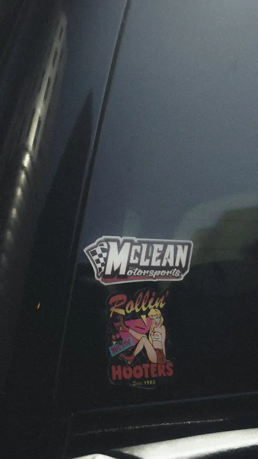

Car features
All about your car.
Get the highlights.
All car features


Take a closer look.



Mazda MX-5 Miata (NA)
From daylight
to after dark.
An NA Miata around UNB Fredericton, from the rooftop lot in daylight to the gas pump after dark.


What a car feature covers
A car feature is a shoot that’s all about your car, from the full statics to the details you put the work into. It’s planned with the owner, so we pick the spots and the timing together.
Chevrolet Silverado 2500HD
Rolling shots
on the highway.
A black Silverado 2500HD out on the highway and around town. Rolling shots, statics against white buildings, a few parkade silhouettes and the details up close.


Subaru Impreza GC8
The Green Weenie.
A green GC8 Impreza at the Stance East booth during Complex Union 2026. The car, the little details, and its owner.


Corvette C8 Convertible
Behind the glass.
A white C8 convertible with red stripes, parked behind the glass of a dealer showroom. Everything from the full profile to the steering wheel.


Keep exploring the work.
All projects


Your car. The next feature.
DM @ln._photos with your car, a date and where you’d like to shoot.